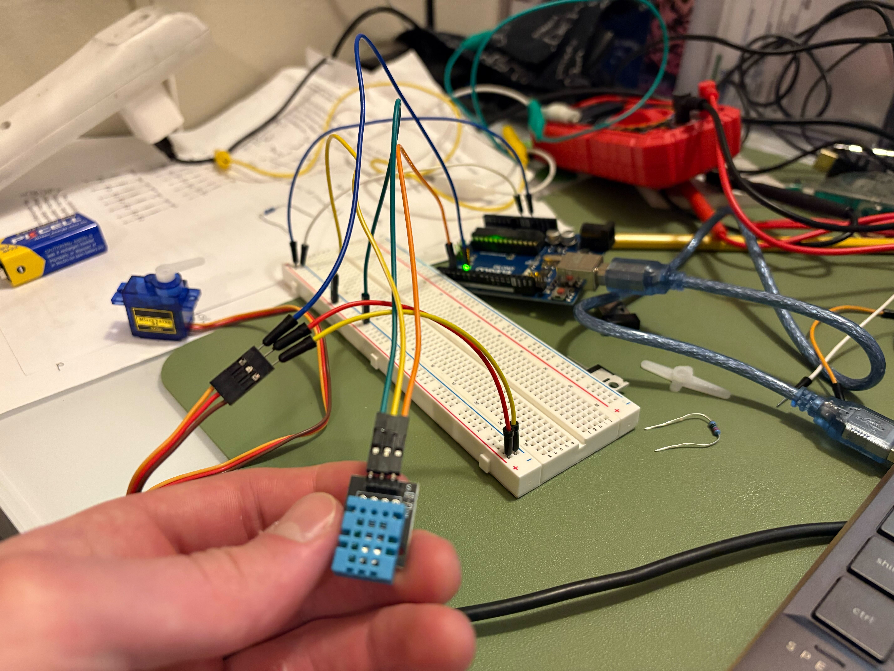
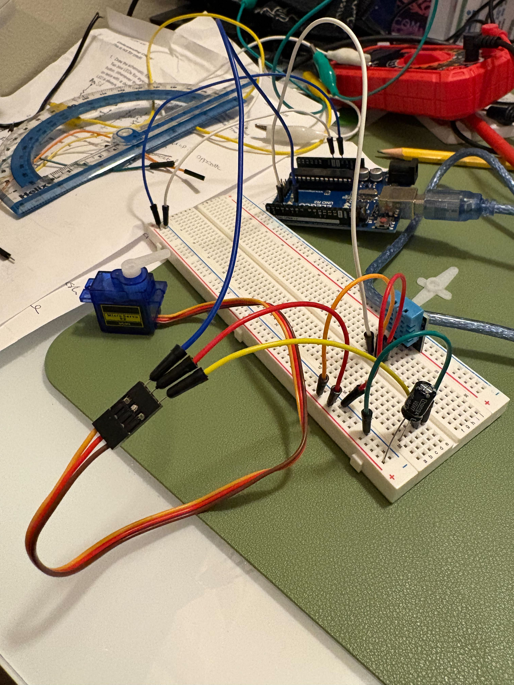
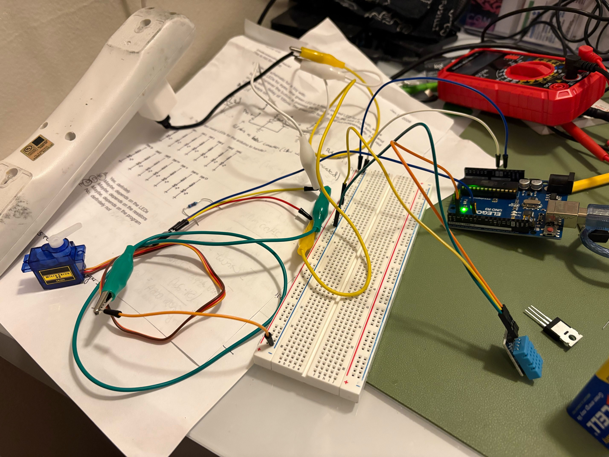
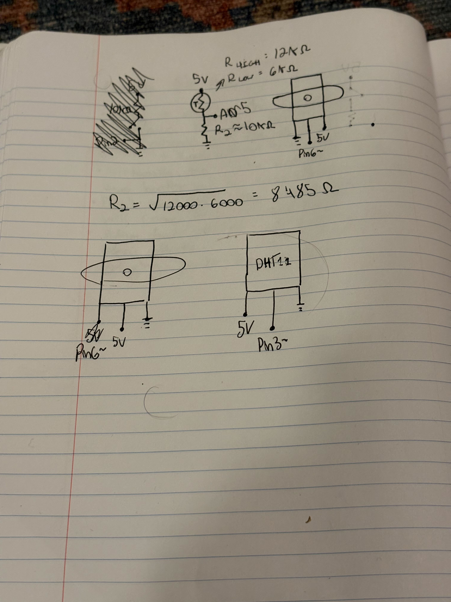
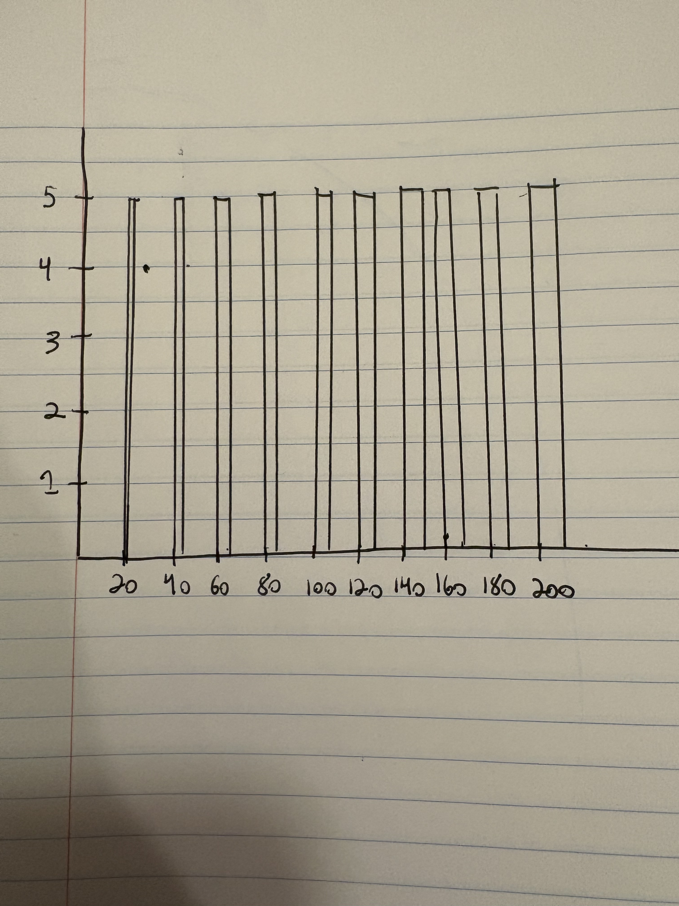

I chose to utilize a mini servo as output and a DHT sensor as input to attempt to create a thermometer that reports the tempurature via the angle of a servo motor. Doing so involved using two libraries and proved quite challenging. First, I tried wiring the system as shown in the photo to the left; however, the servo sparatically or not at all and the temp values picked up by the sensor indicated interference. I then tried wiring the system with a capacitor as suggested by the Hobby Servo Tutorial provided in the class slides. Still facing interference I turned to AI for troubleshooting help. See my chat here. ChatGPT thought that the motor was not recieving enough current, therefore messing with the sensor as well. It suggested that I use an external power source to power the servo. I cut an old USB cord and integrated it into my circut. This too, did not change anything. In fact, the closest numbers read by my sensor were in the original wiring, so I returned the wires to their original orientation and recorded the video below.


// This sketch intends to make a thermometer where the angle of a servo motor corresponds to the tempurature.
#include // import DHT library
#include // import Servo library
#define dhtPin 3 // assign DHT pin number
#define dhtType DHT11 // assign DHT type
int servoPin = 6; // assign servo pin
DHT dht(dhtPin, dhtType); // initialize servo motor object
float minTemp = 15.0; // define min temp to be measured
float maxTemp = 25.0; // define max temp to be measured
Servo thermometer; // define servo motor
void setup() {
dht.begin(); // begins sensor opperation
thermometer.attach(servoPin); // initialize servo pin to servo motor
Serial.begin(9600); // begin serial for testing
}
void loop() {
float temp = dht.readTemperature(); // read the temperature sensed by the DHT
Serial.println(temp);
// an if statement suggested by ChatGPT to ensure that no false temps were read
if (isnan(temp)) {
Serial.println("Sensor error!"); // print if a non existent temp is recorded
return; // skip this loop
}
int servoAngle = map(temp * 10, minTemp * 10, maxTemp * 10, 40, 120); // map sensed temp to servo angle between 40 and 120 degrees, multiplying by ten to perserve decimals
//Serial.println(servoAngle);
servoAngle = constrain(servoAngle, 40, 120); // keep the angles of the servo within a specified range in case of erroneous readings
thermometer.write(servoAngle); // set the angle of the servo
delay(2000); // wait two seconds
}

This schematic illustrates the wiring corresponding to my code. As is visible at the top of the page, I also experimented with using a thermister and a button, but opted for the DHT because of its use of libraries.

This graph shows the voltage (V) vs time (ms) for this code.
void loop() {
for (pos = 0; pos <= 180; pos += 1) {
myservo.write(pos);
delay(100);
}
}
Since servos read voltage every 20ms, the graph shows a voltage pulse every 20ms. However, it is only after 100 ms that the position of the servo changes and the length of
pulse increases.
to filter out erroneous readings from a sensor:
if (sensor value > unacceptable proportion) {
sensor value = previous sensor value
}
to smooth data:
Take the last x number of readings and the current reading, average them, then use the sliding window algorithm to switch out old readings for new ones.
initialize an array
void setup() {
fill array with zeros
}
void loop() {
subtract last value
read from sensor
add reading to total
advance to next position in array
if statement to wrap back to position zero if at the end of the array
calculate the average
}